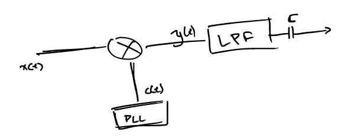
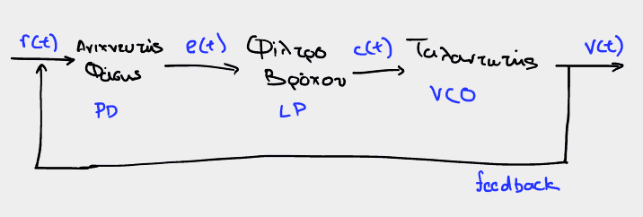
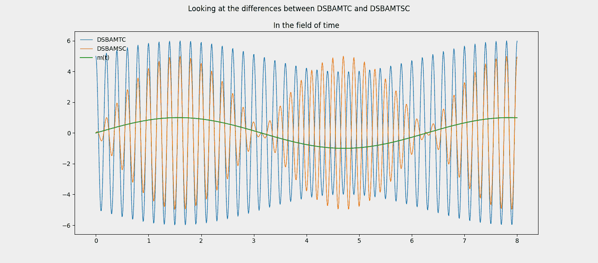
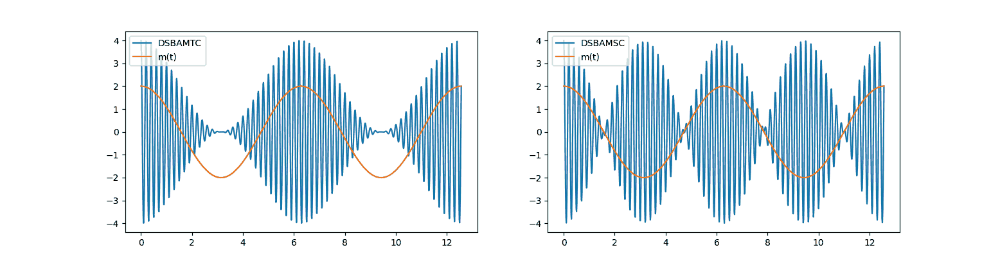
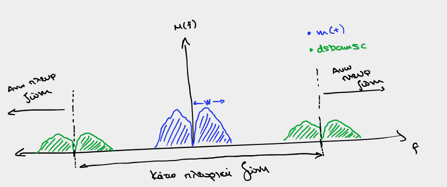

Διάλεξη 4: Ολοκλήρωση AM: Εναλλακτικές AM διαμορφώσεις.
Table of Contents
Αποδιαμόρφωση: η διαδικασία με την οποία από το ληφθέν σήμα \(x(t)\) μπορούμε να πάρουμε το αρχικό σήμα ( σήμα πληροφορίας ) \(m(t)\)
Σύμφωνοι Αποδιαμορφωτές ΑΜ

Συνεχίζοντας από το τέλος της προηγούμενης διάλεξης εδώ αναλύονται καλύτερα οι σύμφωνοι αποδιαμορφωτές.
Coherent demodulators (σύμφωνους αποδιαμορφωτές) ονομάζουμε εκείνους που έχουν κάποια γνώση τον στοιχείων του πομπού για να αποδιαμορφώσουν το σήμα εισόδου. Συγκεκριμένα, πρέπει να γνωρίζουν την συχνότητα και την φάση. Λόγω, όμως, της σχέσης που συνδέει τα δύο αυτά μεγέθη και τα δύο βρίσκονται από το PLL
Πρακτικά βρίσκει πρώτα την φάση και μετά την συχνότητα.
Αναλογικό PLL
Συνοπτικά: Το PLL αποτελεί σύστημα ελέγχου που επιτρέπει σε ταλαντωτή να ταυτιστεί/ μιμηθεί έναν άλλον.

Figure 1: Απλό μοντέλο (εσωτερικό) του PLL, για κατανόηση του τρόπου λειτουργίας.
Λίγο αναλυτικότερα, για σήμα εισόδου της μορφής:
\begin{equation} \label{eq:8} r(t) = A_r\cos{2\pi f_ct + \theta(t)}\\ \end{equation}κλασσικό δηλαδή σήμα διαμορφωτή ΑΜ, το PLL βγάζει σήμα της μορφής:
\begin{equation} \label{eq:4} v(t) = A_y\cos{\left(2\pi f_ct + \phi(t)\right)} \end{equation}όπου, οταν το PLL συμπίπτει ισχύει:
\begin{equation} \label{eq:9} \phi(t) - \theta(t) = 0 \end{equation}- Το PLL είναι αναγκαίο σε τηλεπικοινωνιακά συστήματα, καθώς είναι κριτικής σημασίας ο συγχρονισμός πομπού δέκτη.
Άλλες μορφές διαμορφώσεων πλάτους
Στην δεύτερη διάλεξη είδαμε συνοπτικά πως υπάρχουν 4 είδη ΑΜ διαμόρφωσης. Μέχρι στιγμής έχει εξεταστεί το βασικότερο: Double Sided Band-AM Total Carrier, όμως σε αυτή την διάλεξη, ολοκληρώνοντας το θεωρητικό κομμάτι της διαμόρφωσης πλάτους θα αναφερθούμε και στα υπόλοιπα
DSB-AM-SC: Διπλής Πλευρικής Ζώνης με Καταργημένο Φέρον.
Τα αρχικά της διαμόρφωσης, σε πλήρη αναλογία με την ελληνική ονομασία σημαίνουν: Double Sided Band-AM-Suppressed Carrier

Figure 2: Σύγκριση απλού, συνημιτονοειδούς σήματος πληροφορίας, με τις αντοίστιχες διαμορφώσεις πλάτους TC, SC.
Ενώ στην DSB-AM-TC το διαμορφωμένο σήμα έχει την μορφή:
\begin{equation} \label{eq:1} x(t) = [A_C + m(t)]\cos{2\pi f_ct} \end{equation}Εδώ έχουμε:
\begin{equation} \label{eq:2} x(t) = A_Cm(t)\cos{2\pi f_ct} \end{equation}με αυτή την μορφή να έχει αρκετά προτερήματα επί της κλασσικής διαμόρφωσης πλάτους, με κυριότερο εξ εκείνων, την ευκολότερη ρύθμιση της ισχύος του διαμορφωμένου σήματος και την αποδοτικότητα του.
Σύγκριση με DSBAMTC
Στην DSBAMTC το φέρον προστίθεται για να μπορούμε να κάνουμε ασύμφωνη αποδιαμόρφωση, χαρακτηριστική της TC, καθώς δεν είναι υλοποιήσιμη στην SC. Αυτό ήταν αρχικά σημαντικό λόγω του υψηλού κόστους κατασκευής των κυκλωμάτων για το PLL, που καθιστούσε την σύμφωνη αποδιαμόρφωση εξαιρετικά ακριβή και άρα απαγορευμένη. Με τα χρόνια, όμως, αυτό το κόστος έχει ελαχιστοποιηθεί, επιτρέποντάς μας να περάσουμε από την ασύμφωνη στην σύμφωνη αποδιαμόρφωση.

Figure 3: Σύγκριση των δυο διαμορφώσεων, σε ξεχωριστά διαγράμματα.
- Διαφορά στο πεδίο του χρόνου Η γραφική παράσταση του \(x(t)\) αλλάζει σημαντικά μεταξύ των μορφών συνολικού και κατηργημένου φέροντος, όπως άλλωστε φαίνεται και από τα διαγράμματα. Το πλάτος του διαμορφωμένου κατά TC σήματος φαίνεται ουσιαστικά να μην διαχωρίζει ελάχιστο από μέγιστο, ενώ αντίθετα, στο SC το πλάτος των επιμέρους ταλαντώσεων, είναι ανάλογο του \(m(t)\), με αποτέλεσμα να είναι εμφανής ο συγχρονισμός του διαμορφωμένου σήματος και του σήματος πληροφορίας.
Διαφορά στο πεδίο της συχνότητας
Όπως φαίνεται και από τις παρακάτω εξισώσεις, το φασματικό περιεχόμενο της SC παρουσιάζει πολλές ομοιότητες με εκείνο της TC1, λείπουν, όμως, οι ώσεις που οφείλονται στην DC συνιστώσα. Έχουμε ουσιαστικά μόνο μετατοπίσεις του φάσματος του μηνύματος, ενισχυμένες (καθώς πολλαπλασιάζεται με \(A_c\)). Αυτό είναι εμφανές από τις παρακάτω εξισώσεις:
\begin{align} \label{eq:10} X(f) &= \frac{1}{2}A_c[\delta(f-f_c)+\delta(f+f_c)] + \frac{1}{2}[M(f-f_c)+M(f+f_c)] &\text{DSBAMTC}\\ X(f) &= \frac{1}{2}A_c[M(f-f_c)+M(f+{f_c})]&\text{DSBAMSC} \end{align}Ισχύς
Ακόμα, ένας παράγοντας που όσο περνάνε τα χρόνια αποκτά αυξανόμενη σημασία είναι το ενεργειακό κόστος το οποίο, όπως μπορούμε να δούμε, είναι πιο εύκολα χειριζόμενο στην περίπτωση της DSBAMSC διαμόρφωσης
\begin{equation} \label{eq:14} P_{DSBAMSC} = \frac{1}{2}A_c^2P_{m} \end{equation}Από όπου φαίνεται, ακόμα πως η ισχύς του φέροντος δεν αναλώνεται σε συνιστώσα άσχετη με εκείνη του σήματος πληροφορίας, όπως δείχνει η:
\begin{equation} \label{eq:15} P_{DSBAMTC} = \frac{1}{2}A_c^2 + \frac{1}{2}P_{m} \end{equation}(Σύμφωνη) Αποδιαμόρφωση
Figure 4: Απλός SC αποδιαμορφωτής, με την χρήση PLL
Στις παρακάτω εξισωεις, δείχνουμε την διαδικασία της αποδιαμόρφωσης μέσα από τον παραπάνω σύμφωνο αποδιαμορφωτή, όταν, όμως, δεν έχουμε πλήρη ταύτιση της φάσης του PLL και του σήματος εισόδου.
\begin{align} \label{eq:13} x(t) &= A_cm(t)\cos{\left(2\pi f_ct + \phi_c\right)}\\ \stackrel{*\cos{\left(2\pi f_ct+ \phi\right)}}{\Rightarrow} x'(t) &= A_cm(t)\cos{\left(2\pi f_ct + \phi\right)}\cos{\left(2\pi f_ct + \phi_c\right)}\\ x'(t) &= \frac{1}{2}A_cm(t)[\cos{\left(\phi_c - \phi\right)} + \cos{\left(4\pi f_ct + \phi + \phi_c\right)}]\\ \stackrel{LPF}{\Rightarrow} y(t) &= \frac{1}{2}A_cm(t)\cos{\left(\phi_c-\phi\right)} \end{align}Στην περίπτωση όπου \(\phi_c = \phi\), οπότε \(\cos{\left(\phi_c-\phi\right)}=1\), προφανώς έχουμε:
\begin{equation} \label{eq:3} y(t) = 1/2 A_cm(t) \end{equation}SSB-AM: Single Sideband AM
Τόσο το SSB-AM, όσο και το VSB-AM αποτελούν πλέον παρωχημένες τεχνολογίες. Αναφέρθηκαν μόνο για σφαιρική γνώση και τονίστηκε πως δεν χρειάζεται εμβάθυνση σε αυτές τις δύο. Πιο συγκεκριμένα η VSB-AM, βελτίωση της SSB-AM, χρησιμοποιούνταν σε κάποια φάση στις τηλεοράσεις πριν μεταβούμε στο ψηφιακό σήμα τηλεόρασης.
Στις περιπτώσεις που εξετάστηκαν μέχρι στιγμής στέλναμε ουσιαστικά το ίδιο σήμα (του οποίου το περιεχόμενο χωρίζεται όπως είδαμε σε προηγούμενη διάλεξη σε άνω και κάτω πλευρικές ζώνες) σε δύο διαφορετικές συχνότητες: \(\pm f_c\).

Figure 5: Ανάδειξη της κάτω και άνω πλευρικής ζώνης κατά την DSBAMSC διαμόρφωση.
Αντί να στέλνει, κανείς, και τις δύο πλευρικές ζώνες, γίνεται να μεταφέρει την ίδια πληροφορία, εξοικονομώντας εύρος ζώνης (από 2W σε W) και ισχύ στέλνοντας μόνο μια εκ των δύο. Ανάλογα με το ποια από τις δύο ζώνες εν τέλη στέλνεται λέμε ότι έχουμε και την αντίστοιχη μορφή SSB-AM:
- USSB (Upper - SSB)
- LSSB (Lower - SSB)
Μειονεκτήματα:
Παρόλο που γλυτώνουν εύρος ζώνης δεν χρησιμοποιούνται λόγω θορύβου:
- Χρειάζεται φίλτρα μεγάλης ακριβείας, καθώς αν το \(M(f)\) έχει ισχύ κοντά στο \(0\) (και συνεπώς κατά την μετατόπιση και στο \(+f_c, -f_c\)), τότε είναι εξαιρετικά πιθανό τα φίλτρα είτε να κόβουν πληροφορία από την επιλεγμένη προς προώθηση πλευρική ζώνη, είτε να αφήνουν να περάσει και μέρος της ζώνης που θέλαμε να κόψουμε, παραμορφώνοντας το τελικό μας σήμα.2
- Καθώς η ισχύς του αποστελλόμενου σήματος είναι χαμηλότερη από ότι στην κλασσική αντίστοιχη διαμόρφωση (το SSB λειτουργεί κυρίως επί SC διαμόρφωσης), το SNR είναι μικρότερο, που δείχνει οτι είναι πιο ευάλωτη διαμόρφωση στον θόρυβο
VSB-AM: Vestigial Side Band AM
Στις εξετάσεις μπορεί να βρίσκεται μόνο σε ερωτήσεις ΣΛ με σύντομη αιτιολόγηση.
- Ουσιαστικά βελτίωση του SSB AM γιατί αίρει τον περιορισμό περί ακρίβειας των εμπλεκόμενων φίλτρων.
- Χρησιμοποιούνταν παλαιότερα στην αναλογική τηλεόραση
- Πλέον έχει χάσει το ενδιαφέρον του.
Σύνοψη διαμορφώσεων πλάτους.
| Χαρακτηριστικό Διαμόρφωσης - Διαμόρφωση | DSBAMTC | DSBAMSC | SSBAM | VSBAM |
| \(x_i\) | \(A_c+m(t)\) | \(A_{c} m(t)\) | \(A_{c} m(t)\) | \(A_{c} m(t)\) |
| Εύρος Ζώνης | \(2W\) | \(2W\) | \(W\) | \(W + \frac{W}{K}\) |
| Αποδιαμόρφωση | Ασύμφωνη | Σύμφωνη | Σύμφωνη | Σύμφωνη |
| Ισχύς | \(\frac{A_c^2}{2} + \frac{1}{2}mathcal{P}_m\) | \(\frac{A_c^2}{2} \mathcal{P}_m\) | ||
| Πολυπλοκότητα δέκτη | μικρή | μεγάλη | μεγάλη | μεγάλη |
| Κόστος δέκτη | χαμηλό | υψηλό | υψηλό | υψηλό |
| Αποδοτικότητα ισχύος | μικρή | μέγιστη | μέγιστη | μέγιστη |
Footnotes:
Στην πραγματικότητα είναι δύσκολο να γίνει κατανοητό με τον τρόπο της ισχύος στο 0. Είναι πιο εύκολο να γίνει κατανοητό γραφικά. Τα ζωνοπερατά φίλτρα, αν και ιδανικά θα λειτουργούσαν ακριβώς στο \((f_c,f_c + W)\) (ή σε οποιαδήποτε περιοχή έπρεπε να λειτουργήσουν), δεν λειτουργούν έτσι. Η ακρίβεια τους είναι περιορισμένη. Λόγω αυτού, μπορεί μέρος της κάτω πλευρικής ζώνης (ή της άνω), ανάλογα με την μορφή της SSB διαμόρφωσης που κάνουμε, να περάσει παραμορφώνοντας την έξοδο μας.